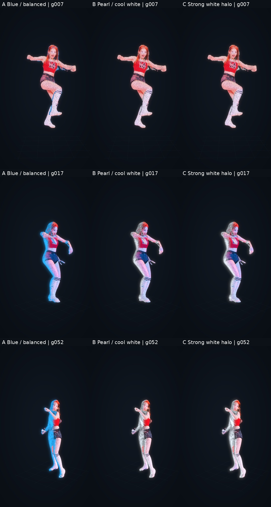

POINT CLOUD · LIGHT STUDY
A softer glow.
正面保留人物颜色，背面改成冷白荧光。切换颜色可比较相同动作、相同相机下的效果。
下载当前原文件 ↓
1080 × 1920 · 24 fps
这是 2.21 秒的材质测试片段，人物动作和相机同时变化，可循环比较。完整宣传片仍在制作中。
查看蓝色／两档白色的静态对照

本页只比较显示材质。白色标示模型推断的不可见表面；原始重建仍有局部边界问题，辉光不代表几何已修复。